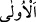
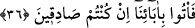

Müftî Sâdî bu konunun tartışmalı olduğunu söylemiştir. Zîra ilk olan şey, son olanın
kendisine izâfe edildiği şeydir. Şu halde hiç şüphesiz ikinci olan şey de, son olanın
kendisine izâfe edildiği şey olacaktır. Çünkü birbirine izâfe edilen şeyler varlık ve
yokluk bakımından denktirler. Müftî Sâdî sonra şöyle demiştir: Yukarıdaki îzâhtan
musannifin maksadının şu olduğunu söylemek mümkündür: İlk olmakla murâdın en
sonuncuya bir benzeriyle öncelik etmek olmadığına mecâz yoluyla işârette bulunmak.
Keşşâf’ta şöyle denilmektedir: Onlara sizin şu hayatınızdan önce bir ölüm devreniz
olduğu gibi bu ölümünüzden sonra da yeniden bir hayat devreniz olacaktır, denilince
onlar “İlk ölümümüzden sonra bir şey yoktur...” dediler. Yani ölüm ilk ölümdür, başka
bir şey değildir. Yani ölüm ardından hayatın geleceği ölüm değil, bizim ilk
ölümümüzdür, dediler. Bu şekilde bir tahsis mânâsı sanki başka değil bizim sadece ilk
birinci hayatımız şu dünyâ hayatı vardır, başka bir diriliş yoktur sonucuna
götürmektedir. Dünyâ hayatından önceki duruma ölüm denmesinde her hangi bir zorlama
yoktur. Nitekim Allah Teâlâ’nın şöyle buyurması da bunu ortaya koyuyor: “Allah’a
nasıl nankörlük edersiniz ki siz ölüler idiniz o sizi diriltti; yine öldürecek, yine
diriltecek…” (Bakara, 2/28)
Bazıları şöyle demiştir: Burada kasdedilen mânâ şudur: Ölüm bu ölümden başka bir
şey değildir. Yoksa sizin iddiâ ettiğiniz gibi ardından kabir hayatının geleceği ve daha
sonra dirilme ve toplanma olacağı bir ölüm yoktur, demektedirler. Buradaki durumun
muzâfın hazfine hamledilmesi de uzak bir mânâ değildir. Bu sefer takdir, hayat ancak
bizim birinci ölümümüzün olduğu hayattır, demek olur. Burada “
/el-ûlâ” kelimesi
muzâfın sıfatıdır. Âyetin son cümlesi olan “Biz diriltilecek değiliz” ifâdesi de buna
karine teşkil etmektedir. Bu sefer âyet, Allah Teâlâ’nın “Dediler ki dünyâ
hayatımızdan başka bir hayat yoktur, biz diriltilecek değiliz” (En’am, 6/29) kavli
gibi olur. Müftî Sâdî’nin Havâşî’sinde böyle geçer.
“Biz” öldükten sonra “diriltilecek değiliz” Yani ölümden sonra hayat sahibi olacak
kimselerden ve yeniden diriltileceklerden… Kâfirlerin bu sözden maksadları ölülerin
kabirlerinden dirilip kalkıp mahşerde toplanmalarını kelimenin tam mânâsıyla inkâr
etmektir.
36. “Doğru söylüyorsanız, atalarımızı getirin.”
Bu hitâb, kâfirlere öldükten sonra dirilmeyi vaad eden peygambere ve mü’minleredir.
“O halde babalarımızı mezardan çıkarıp getirin ve onlara hayat verin.”
“Doğru söylüyorsanız” Yani şâyet vaad etmiş olduğunuz öldükten sonra dirilme ve
kıyâmetin geleceği husûsundaki sözünüzün doğruluğuna inanıyorsanız, yani bu
hususların gerçekleşmesi mümkün ve akla uygun ise, bizim daha önce ölmüş olan